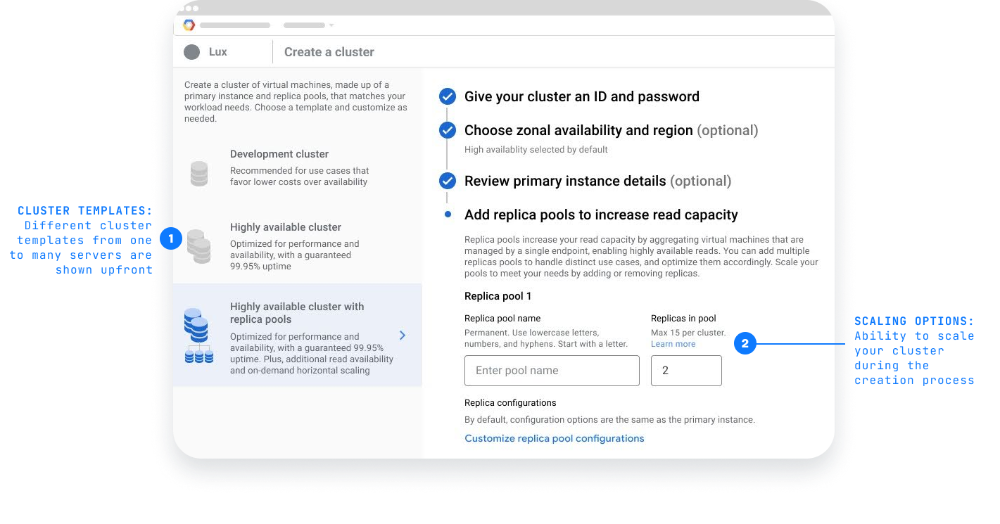
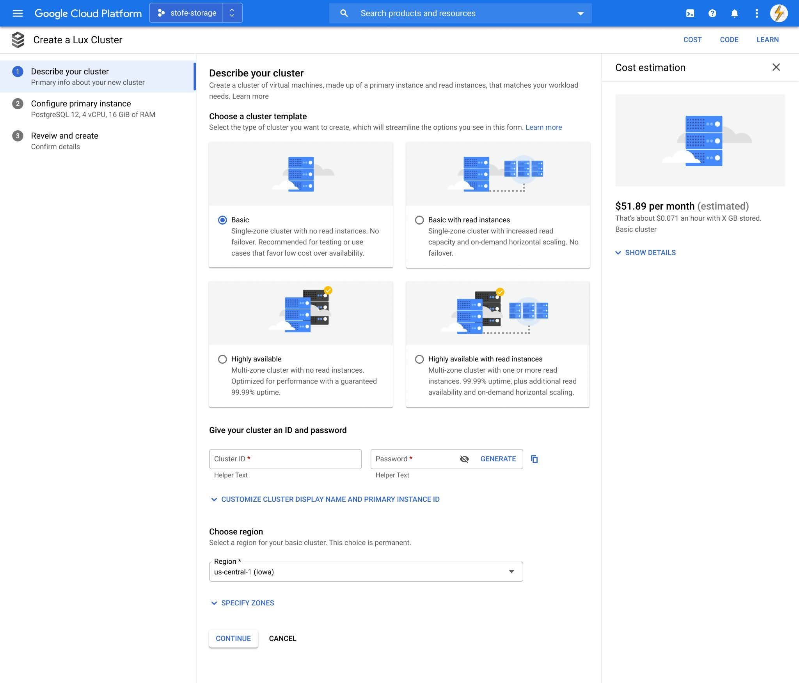
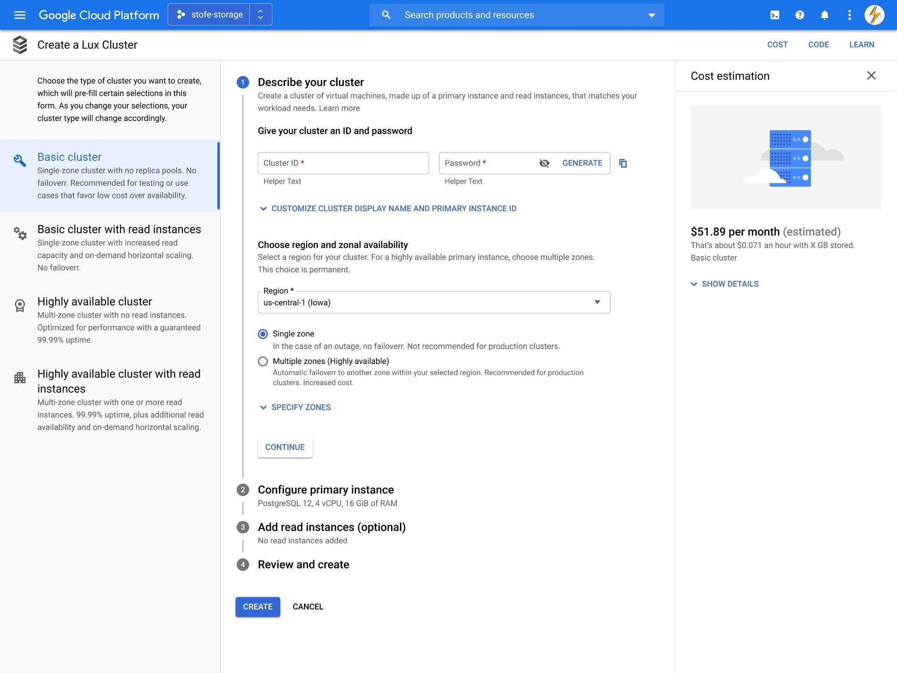
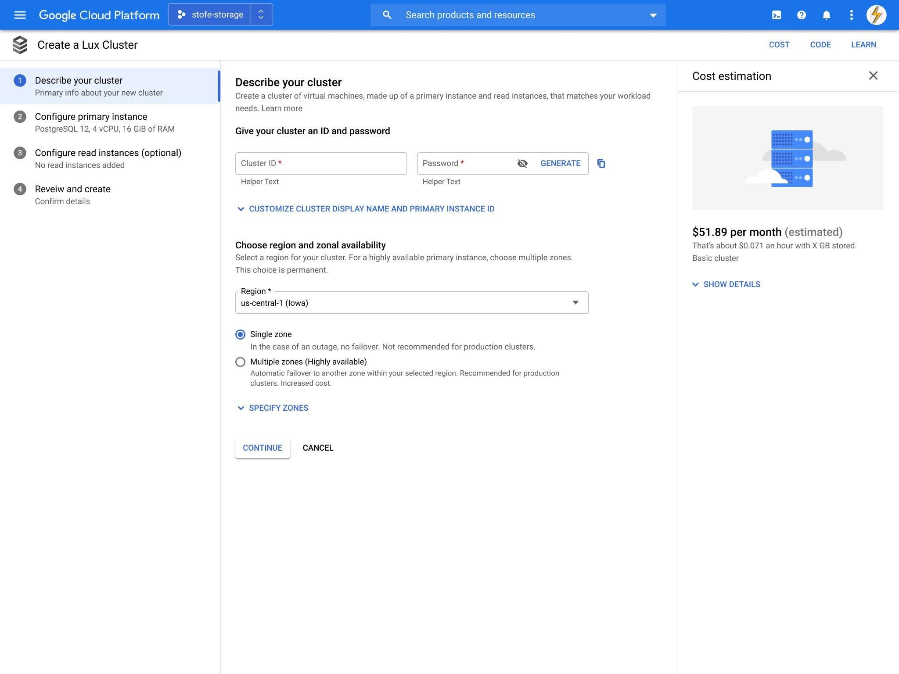
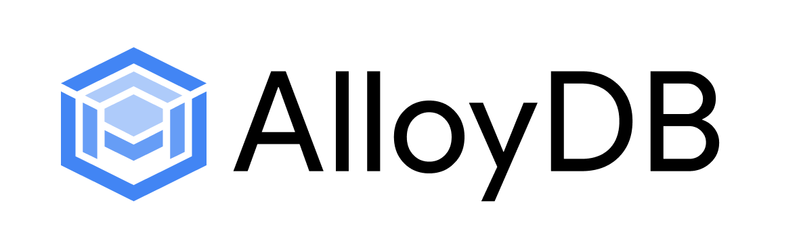
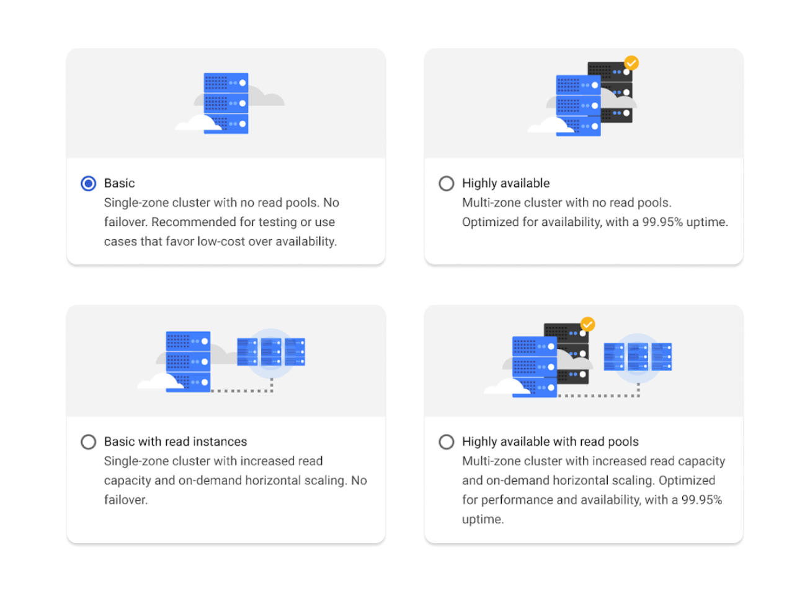
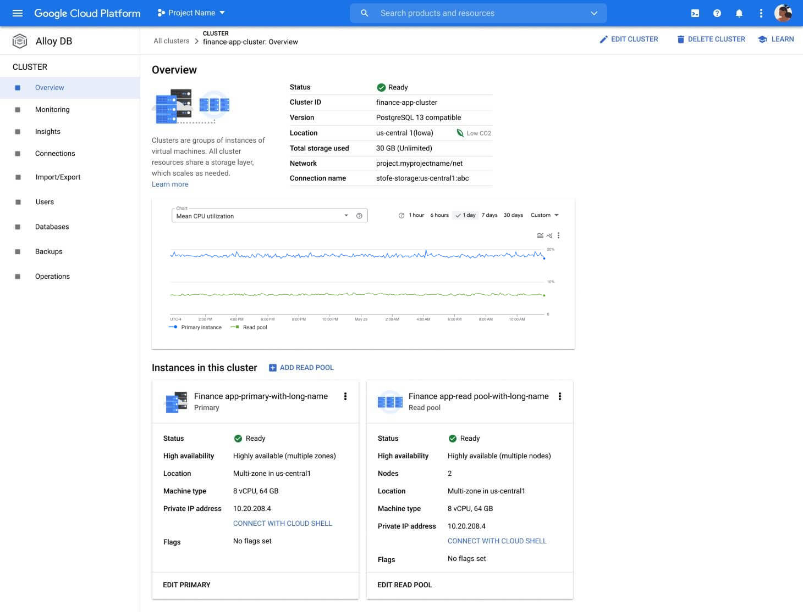

A new product. A new title. And nine months to ship.
AlloyDB, Google Cloud's first new database product in a decade. I led UX from product idea to v1 (private preview) launch as design lead and manager.
My first 0 to 1 product at Google. My first time as a manager. And was still leading design on another product at the same time.
Craft and coordination aren't a trade-off. Research, product, engineering, leadership, and recruiting all needed a designer who can do both.
Product idea to v1 private preview launch in 9 months
ARR reached within two years of launch
Customers adopted AlloyDB in the first two years
Fastest-growing database on Google Cloud
Launch a new database, hire a designer, and keep leading the product I was already on.
I'd just been promoted. The assignment that came with it was three things at once. Lead design on a new database product Google Cloud was launching. Hire a designer to share the load. And keep leading design on the product I was already on.
It was my first 0 to 1 product at Google. My first time being a manager. And the launch window was nine months. There was no version of this where one person could manage it all. So from the first week, the question I was really answering was: what does the design org's first contribution to this product need to be, and what can I personally take on?
That question shaped everything that followed.
User-centered design
Applied at the pace and scale of a new product launch.
Understand
- Competitive Audit
- Heuristic Evaluation
Define
- Workshops
- Wireframes
- User interviews
Refine
- Prototypes
- Usability Research
Build
- Detailed Mocks
- Development
Launch
- Private Preview
- Google I/O 2022
Onboarding was where customers would form their first opinion.
Onboarding for a database is more than a splash screen and sign up form. It's the cluster creation flow, where a customer configures the database for the workload they're bringing. It's the cluster overview page, where they see what they've built and start to operate it. It's the moments where any friction can cause users not to adopt. This is where I decided to focus.
Before designing any of it, I audited competitors and ran heuristic evaluations on similar products. That work gave me the patterns and gaps to design against.
A competitive audit and heuristic evaluation
I teamed up with the UX researcher to audit the leading competitor's database setup end to end. A pattern surfaced. Customers created an initial database cluster, and only after that initial cluster was provisioned could they add additional read servers to scale. Scaling was a second step, in a second flow, after a customer had already committed to a configuration. That was the convention.
| Category | Takeaway | Compute Engine | Aurora |
|---|---|---|---|
| Scaling | Prove robust autoscaling settings | ||
| Provide visible autoscaling metrics | |||
| Provide autoscaling status | |||
| Allow for large pool sizes | |||
| Allow for multiple autoscaling rules | |||
| Surface all scaling settings in one view | |||
| Configuration | Provide reusable templates for cluster creation | ||
| Provide use cases customers can select from | |||
| Provide overall group summary | |||
| Enable multiple groups in a cluster | |||
| Show full cluster shape before creation |
Two categories from the competitive audit, focused on how competitors handled scale and configuration. The full version covered six categories.
The hypothesis: setup as differentiation
Making scaling part of the setup process, instead of a separate one, would differentiate AlloyDB and shorten the path from intent to a working production-ready cluster. Customers would see the full shape of what they were creating before they created it. They'd choose a configuration that fit their workload, not a starter configuration they'd later have to grow out of.
Even when a customer started small, the form itself would advertise the full range of what AlloyDB could scale to. The UI reinforced what the business was selling.
That was specific enough to test and getting it right would change how AlloyDB felt compared to the alternatives.
Testing the bet.
I created wireframes with scaling options surfaced during the create process. The whole point was to see how customers would react to it.
What was tested in the design
1. Cluster templates surfaced upfront. Before the customer entered a single setting, they saw three pre-configured directions: a development cluster, a highly available cluster, and a highly available cluster with replica pools. The full shape of what they were creating was visible before they created it.
2. Scaling built into the creation flow. Replica pools, traditionally a post-creation operation, were promoted to a step inside the create flow. Customers could set up scaling at the same moment they were setting up the database.

What came back
What worked — visible scaling options
Participants responded to the streamlined flow. One technical lead said setting up the primary instance and the replica pools in one shot was a major improvement, and called out the flow specifically. Conclusion: putting scaling in front of customers at creation time changed how they read the product.
What didn't - intuitive customization
The templates worked as anchors but not as starting points. Participants weren't sure whether they could create a cluster that didn't fit one of the three templates, and they were hesitant to edit anything labeled "optional," even when those settings were the ones they needed to change. The structure that made the bet legible was also reading as rigid.
That gap between what the templates promised and what customers felt permission to do with them became the question the next round of design had to answer.
Three directions. One decision.
The first test confirmed customers wanted scaling options at creation time. What it didn't settle was how those options should be presented. I went back to the drawing board and designed three directions, each handling that question differently.
The question behind the prototypes
Each direction took a different position on how visible the scaling decision should be. I put all three in front of customers to see which one read clearest.
Option 1 — Illustrative
A visual representation of the cluster's configuration, including its scaling options, surfaced upfront. Customers see what they're building before they build it.

Option 2 — Descriptive
Each configuration option laid out in plain text. Scaling is named and explained, but not visualized.

Option 3 — Hidden
The conventional pattern. Scaling options stay tucked behind the cluster creation step until the customer reaches them in sequence.

The three options were three positions on one question: how visible should the differentiator be, given that customers wanted scaling at creation time but didn't want to feel locked into a template? Option 3 was the safe choice. Option 1 was the risk.
What customers told us
The results came back clear. Option 1, the most visual of the three, was the direction customers responded to most.
Participants said it helped them understand AlloyDB's scaling capability before they'd configured anything. It introduced them to the idea of additional servers without burying that idea in form fields. The illustrations themselves were doing work, not just decorating the page. They were teaching.
The bet held, and the more visible version of the bet was the one that worked. The version where the UI showed customers what they were building, instead of asking them to imagine it.
Making it real.
What followed was the work that turned the bet into a product: naming the thing, illustrating the architecture, and detailing the surfaces customers would create and operate clusters from.
Naming the product
AlloyDB didn't have a name when I started. I co-led the first workshop with the UX writer to generate the candidates leadership would consider. Our round produced the directions; an outside agency took those forward and finalized the name from there.
AlloyDB landed because it carried something specific. An alloy is two materials combined to produce something stronger than either alone, which is what the product was technically: Google's infrastructure combined with PostgreSQL compatibility.

Diving into the illustrations
AlloyDB lets customers start with different cluster architectures depending on their workload. Described in text alone, those architectures sounded similar even when they weren't.
I added illustrations directly into the form, one per architecture, showing how the primary instance related to the replicas and how the pieces fit. Customers could now compare architectures the same way they'd compare floor plans, not the way they'd compare paragraphs.
Illustrations inside a configuration form wasn't a pattern the org had used before. The form started teaching instead of just collecting inputs.

The cluster overview page
Onboarding doesn't end when the cluster gets created. It ends when the customer can confidently operate what they've created. The cluster overview page, where a customer sees the elements and components of their cluster after creation, was the next critical surface. I didn't design this one myself. I guided the designer on my team through it.
She ran her own workshop to align the team on what the page needed to do. I helped her shape it, joined the session to provide additional UX support, and worked with her on the design that came out of it. The page she shipped gave customers a clean read on the state of their cluster, what was running, what was connected, what needed attention, without making them stitch the picture together from separate screens.
This is the work I'm most quietly proud of in this case study. Not the screen I drew. The screen someone else drew because I'd set them up to draw it.

V1, then I/O.
AlloyDB launched in private preview nine months after the assignment came down. From product idea to a working v1 in customers' hands. The cluster creation flow my team and I designed became the front door of the product.
Eight months after that, AlloyDB was announced on the Google I/O 2022 stage on May 12. Two distinct milestones, not one. The first was the proof the product could ship. The second was the proof Google was willing to put weight behind it.
AlloyDB went on to become the fastest-growing database on Google Cloud.
The differentiator held. Scaling-in-the-create-flow worked the way the research said it would.
What users said, three years in
A current-user survey of 36 AlloyDB customers, run roughly three years after launch, gave the cluster creation flow its longest-running review. General ease of use was the most frequent category of feedback, with 13 comments calling it out specifically. Templatized layouts came up positively too — customers liked having a starting configuration to anchor against, which validated the template approach the earlier research had pointed toward.
The illustrations were a more honest finding. Seven users called out the tiled illustrations on the first step of the form as visually appealing. Researchers noted that the illustrations didn't significantly improve understanding — they were liked more than they were useful. That's worth saying plainly. The illustrations did less than I hoped on comprehension. They did real work on how the form felt, which is its own kind of contribution, but not the one I'd been designing toward.
The columnar engine.
The columnar engine was one of AlloyDB's most distinctive technical capabilities. The launch announcement described it as a vectorized columnar accelerator, and called out analytical queries running up to 100 times faster than standard PostgreSQL because of it. It was a real selling point.
In the UI, it didn't get the prominence it deserved. PM and engineering leadership weren't prioritizing it as a UI moment, and I made my case but didn't go hard. I argued for it in conversation. I didn't build a prototype.
That's the one I'd take back. Not the argument I lost — the prototype I didn't make. A well-built mock of what the columnar engine could feel like in the UI would have changed the conversation. Words don't move a roadmap as well as a thing you can click does.
It's the lesson I've carried into every product conversation since. If something matters enough to argue for, it matters enough to prototype.
What I learned launching AlloyDB.
Nine months. First 0 to 1 at Google. First time as a manager. The differentiator I bet on at the start was the one customers responded to at the end.
The work that mattered most happened before I opened Figma — auditing what the category had defaulted to, with a researcher beside me, and naming the convention nobody had questioned.
The naming workshop produced AlloyDB. The onboarding principles workshop produced something that outlasted the product. Neither was a screen I designed. Both shaped the launch more than most screens did.
The cluster overview page was designed by someone else on my team. My job was to set her up to design it well — to help her shape the workshop, hold the line on the principles, and trust the work she came back with.
I made the case for the columnar engine in conversation. I didn't build a mock. That's the one I'd take back.
The onboarding principles from one workshop are still in use across the database portfolio. That wasn't the goal. It's how design work tends to behave when it's done in the open.
If you're building a team that wants design leadership ready for what's next, let's talk.
Get in touch →